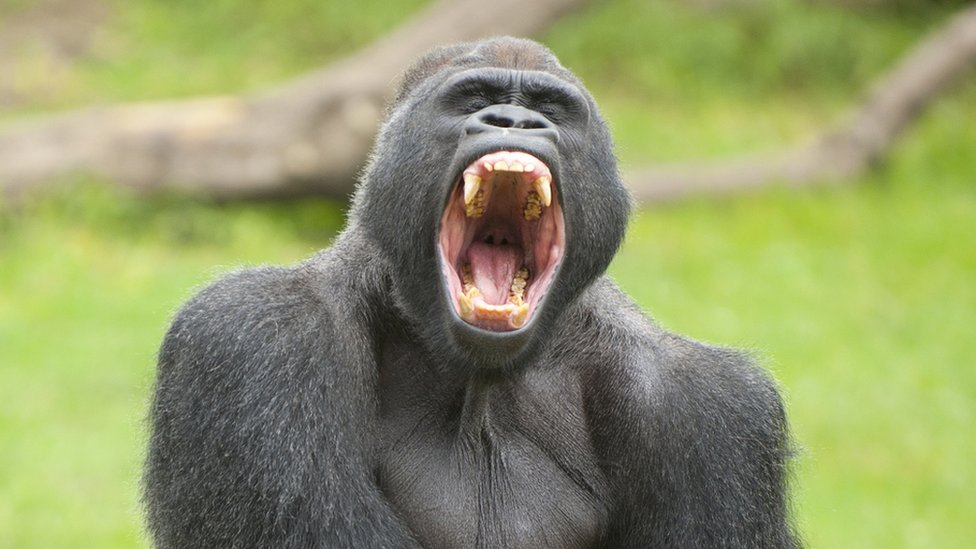

<!--
    URL's e caminhos de arquivos:

    - URL:
        Universal Resource Locator (Tranformado em IP por um DNS)

        https://rocketSeat.com.br 

        URL's usam caminhos para econtrar arquivos em servidores.

    - Caminhos de arquivos:
    
        Onde, no explorador de arquivos, um dado recurso(arquivo, imagem, documento etc.) se encontra.
-->

<!--Como a imagem.jpg está na mesma página do código html, so digitamos o nome da imagem e da extensão. Assim como no link que referencia outro arquivo-->


<a href="Pratica-01.html" target="_blank">Prática 01 de html</a>

